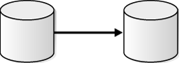
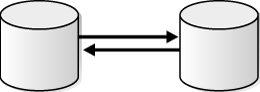
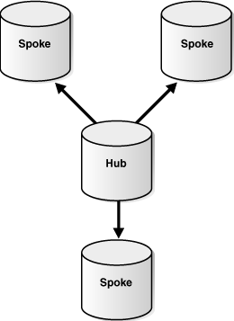
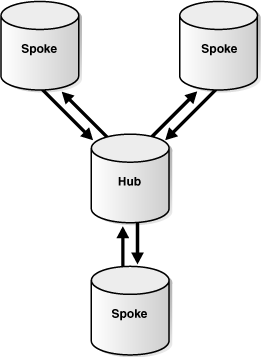
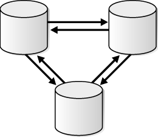

1 Preparing for Oracle Streams Replication
This chapter contains information about preparing for an Oracle Streams replication environment. This chapter also describes best practices to follow when you are preparing for an Oracle Streams replication environment.
This chapter contains these topics:
-
Decisions to Make Before Configuring Oracle Streams Replication
-
Tasks to Complete Before Configuring Oracle Streams Replication
See Also:
Oracle Streams Concepts and Administration for general information about Oracle Streams. This document assumes that you understand the concepts described in Oracle Streams Concepts and Administration.
1.1 Overview of Oracle Streams Replication
Replication is the process of sharing database objects and data at multiple databases. To maintain replicated database objects and data at multiple databases, a change to one of these database objects at a database is shared with the other databases. Through this process, the database objects and data are kept synchronized at all of the databases in the replication environment. In an Oracle Streams replication environment, the database where a change originates is called the source database, and a database where a change is shared is called a destination database.
When you use Oracle Streams, replication of a data manipulation language (DML) or data definition language (DDL) change typically includes three steps:
-
A capture process, a synchronous capture, or an application creates one or more logical change records (LCRs) and enqueues them. An LCR is a message with a specific format that describes a database change. A capture process reformats changes captured from the redo log into LCRs, a synchronous capture uses an internal mechanism to reformat changes into LCRs, and an application can construct LCRs. If the change was a DML operation, then each row LCR encapsulates a row change resulting from the DML operation to a replicated table at the source database. If the change was a DDL operation, then a DDL LCR encapsulates the DDL change that was made to a replicated database object at a source database.
-
A propagation propagates the staged LCRs to another queue, which usually resides in a database that is separate from the database where the LCRs were captured. An LCR can be propagated to several different queues before it arrives at a destination database.
-
At a destination database, an apply process consumes the change. An apply process can dequeue the LCR and apply it directly to the replicated database object, or an apply process can dequeue the LCR and send it to an apply handler. In an Oracle Streams replication environment, an apply handler performs customized processing of an LCR. An apply handler can apply the change in the LCR to the replicated database object, or it can consume the LCR in some other way.
Step 1 and Step 3 are required, but Step 2 is optional because, in some cases, a capture process or a synchronous capture can enqueue a change into a queue, and an apply process can dequeue the change from the same queue. An application can also enqueue an LCR directly at a destination database. In addition, in a heterogeneous replication environment in which an Oracle database shares information with a non-Oracle database, an apply process can apply changes directly to a non-Oracle database without propagating LCRs.
Figure 1-1 illustrates the information flow in an Oracle Streams replication environment.
Figure 1-1 Oracle Streams Information Flow
Description of "Figure 1-1 Oracle Streams Information Flow"
This document describes how to use Oracle Streams for replication and includes the following information:
-
Conceptual information relating to Oracle Streams replication
-
Instructions for configuring an Oracle Streams replication environment
-
Instructions for administering, monitoring, and troubleshooting an Oracle Streams replication environment
-
Examples that create and maintain Oracle Streams replication environments
Replication is one form of information sharing. Oracle Streams enables replication, and it also enables other forms of information sharing, such as messaging, event management and notification, data warehouse loading, and data protection.
See Also:
Oracle Streams Concepts and Administration for more information about Oracle Streams
1.1.1 Common Reasons to Use Oracle Streams Replication
The following are some of the most common reasons for using Oracle Streams replication:
-
Availability: Replication provides fast, local access to shared data because it balances activity over multiple sites. Some users can access one server while other users access different servers, thereby reducing the load at all servers. Also, users can access data from the replication site that has the lowest access cost, which is typically the site that is geographically closest to them.
-
Performance and Network Load Reduction: Replication provides fast, local access to shared data because it balances activity over multiple sites. Some users can access one server while other users access different servers, thereby reducing the load at all servers. Applications can access various regional servers instead of accessing one central server. This configuration can reduce network load dramatically.
1.1.2 Rules in an Oracle Streams Replication Environment
A rule is a database object that enables a client to perform an action when an event occurs and a condition is satisfied. Rules are evaluated by a rules engine, which is a built-in part of Oracle Database. Rules control the information flow in an Oracle Streams replication environment. Each of the following components is a client of the rules engine:
-
Capture process
-
Synchronous capture
-
Propagation
-
Apply process
You control the behavior of each of these Oracle Streams clients using rules. A rule set contains a collection of rules. You can associate a positive and a negative rule set with a capture process, a propagation, and an apply process, but a synchronous capture can have only a positive rule set.
In a replication environment, an Oracle Streams client performs an action if a logical change record (LCR) satisfies its rule sets. In general, an LCR satisfies the rule sets for an Oracle Streams client if no rules in the negative rule set evaluate to TRUE for the LCR, and at least one rule in the positive rule set evaluates to TRUE for the LCR. If an Oracle Streams client is associated with both a positive and negative rule set, then the negative rule set is always evaluated first.
Specifically, you control the information flow in an Oracle Streams replication environment in the following ways:
-
Specify the changes that a capture process captures from the redo log or discards. That is, if a change found in the redo log satisfies the rule sets for a capture process, then the capture process captures the change. If a change found in the redo log does not satisfy the rule sets for a capture process, then the capture process discards the change.
-
Specify the changes that a synchronous capture captures or discards. That is, if a DML change made to a table satisfies the rule set for a synchronous capture, then the synchronous capture captures the change. If a DML change made to a table does not satisfy the rule set for a synchronous capture, then the synchronous capture discards the change.
-
Specify the LCRs that a propagation propagates from one queue to another or discards. That is, if an LCR in a queue satisfies the rule sets for a propagation, then the propagation sends the LCR. If an LCR in a queue does not satisfy the rule sets for a propagation, then the propagation discards the LCR.
-
Specify the LCRs that an apply process dequeues or discards. That is, if an LCR in a queue satisfies the rule sets for an apply process, then the apply process dequeues and processes the LCR. If an LCR in a queue does not satisfy the rule sets for an apply process, then the apply process discards the LCR.
You can use the Oracle-supplied PL/SQL package DBMS_STREAMS_ADM to create rules for an Oracle Streams replication environment. You can specify these system-created rules at the following levels:
-
Table level - Contains a rule condition that evaluates to
TRUEfor changes made to a particular table -
Schema level - Contains a rule condition that evaluates to
TRUEfor changes made to a particular schema and the database objects in the schema -
Global level - Contains a rule condition that evaluates to
TRUEfor all changes made to a database
In addition, a single system-created rule can evaluate to TRUE for DML changes or for DDL changes, but not both. So, for example, to replicate both DML and DDL changes to a particular table, you need both a table-level DML rule and a table-level DDL rule for the table.
Oracle Streams also supports subsetting of table data with subset rules. If a replicated table in a database contains only a subset of the data, then you can configure Oracle Streams so that only the appropriate subset of the data is replicated. For example, a particular database might maintain data for employees in a particular department only. One or more other databases in the replication environment might contain all of the data in the employees table. In this case, you can use subset rules to replicate changes to the data for employees in that department with the subset table, but not changes to employees in other departments.
Subsetting can be done at any point in the Oracle Streams information flow. That is, a capture process or synchronous capture can use a subset rule to capture a subset of changes to a particular table, a propagation can use a subset rule to propagate a subset of changes to a particular table, and an apply process can use a subset rule to apply a subset of changes to a particular table.
Note:
Synchronous captures only use table rules. Synchronous captures ignore schema and global rules.
See Also:
Oracle Streams Concepts and Administration for more information about how rules are used in Oracle Streams
1.2 Decisions to Make Before Configuring Oracle Streams Replication
Make the following decisions before configuring Oracle Streams replication:
1.2.1 Decide Which Type of Replication Environment to Configure
Before configuring a replication environment, first decide how many databases will be included in the replication environment, which database objects will be replicated, and how database changes will flow through the replication environment.
The following sections describe the most common types of replication environments:
If these common replication environments do not meet your requirements, then you can configure almost any type of custom replication environment with Oracle Streams. For example, a custom replication environment might send database changes through several intermediary databases before the changes are applied at a destination database.
1.2.1.1 About Two-Database Replication Environments
A two-database replication environment is one in which only two databases share the replicated database objects. The changes made to replicated database objects at one database are captured and sent directly to the other database, where they are applied. In a two-database replication environment, only one database might allow changes to the database objects, or both databases might allow changes to them.
If only one database allows changes to the replicated database objects, then the other database contains read-only replicas of these database objects. This is a one-way replication environment and typically has the following basic components:
-
The first database has a capture process or synchronous capture to capture changes to the replicated database objects.
-
The first database has a propagation that sends the captured changes to the other database.
-
The second database has an apply process to apply changes from the first database.
-
For the best performance, each capture process and apply process has its own queue.
Figure 1-2 shows a two-database replication environment configured for one-way replication.
Figure 1-2 One-Way Replication in a Two-Database Replication Environment
Description of "Figure 1-2 One-Way Replication in a Two-Database Replication Environment"
In a two-database replication environment, both databases can allow changes to the replicated database objects. In this case, both databases capture changes to these database objects and send the changes to the other database, where they are applied. This is a bi-directional replication environment and typically has the following basic components:
-
Each database has a capture process or synchronous capture to capture changes to the replicated database objects.
-
Each database has a propagation that sends the captured changes to the other database.
-
Each database has an apply process to apply changes from the other database.
-
For the best performance, each capture process and apply process has its own queue.
Figure 1-3 show a two-database replication environment configured for bi-directional replication.
Figure 1-3 Bi-Directional Replication in a Two-Database Replication Environment
Description of "Figure 1-3 Bi-Directional Replication in a Two-Database Replication Environment"
Typically, in a bi-directional replication environment, you should configure conflict resolution to keep the replicated database objects synchronized. You can configure a two-database replication environment using Setup Streams Replication Wizard in Oracle Enterprise Manager Cloud Control or the configuration procedures in the DBMS_STREAMS_ADM package.
1.2.1.2 About Hub-And-Spoke Replication Environments
A hub-and-spoke replication environment is one in which a central database, or hub, communicates with secondary databases, or spokes. The spokes do not communicate directly with each other. In a hub-and-spoke replication environment, the spokes might or might not allow changes to the replicated database objects.
If the spokes do not allow changes, then they contain read-only replicas of the database objects at the hub. This type of hub-and-spoke replication environment typically has the following basic components:
-
The hub has a capture process or synchronous capture to capture changes to the replicated database objects.
-
The hub has propagations that send the captured changes to each of the spokes.
-
Each spoke has an apply process to apply changes from the hub.
-
For the best performance, each capture process and apply process has its own queue.
Figure 1-4 shows a hub-and-spoke replication environment with read-only spokes.
Figure 1-4 Hub-and-Spoke Replication Environment with Read-Only Spokes
Description of "Figure 1-4 Hub-and-Spoke Replication Environment with Read-Only Spokes"
If the spokes allow changes to the database objects, then typically the changes are captured and sent back to the hub, and the hub replicates the changes with the other spokes. This type of hub-and-spoke replication environment typically has the following basic components:
-
The hub has a capture process or synchronous capture to capture changes to the replicated database objects.
-
The hub has propagations that send the captured changes to each of the spokes.
-
Each spoke has a capture process or synchronous capture to capture changes to the replicated database objects.
-
Each spoke has a propagation that sends changes made at the spoke back to the hub.
-
Each spoke has an apply process to apply changes from the hub and from the other spokes.
-
The hub has a separate apply process to apply changes from each spoke. A different apply process must apply changes from each spoke.
-
For the best performance, each capture process and apply process has its own queue.
Figure 1-5 shows a hub-and-spoke replication environment with read/write spokes.
Figure 1-5 Hub-and-Spoke Replication Environment with Read/Write Spokes
Description of "Figure 1-5 Hub-and-Spoke Replication Environment with Read/Write Spokes"
Typically, in a hub-and-spoke replication environment that allows changes at spoke databases, you should configure conflict resolution to keep the replicated database objects synchronized. Some hub-and-spoke replication environments allow changes to the replicated database objects at some spokes but not at others.
For example, an insurance company might use this configuration to share customer data between its headquarters and local sales offices. A networked version of this configuration can be especially useful in cases of limited connectivity between the end spokes and the hub. Suppose local sales offices have direct connectivity to regional offices, which in turn connect to headquarters, but the local offices have no direct connectivity to headquarters. This type of networked routing can eliminate some complexity that results when there are direct connections between all locations. The hub-and-spoke configuration is also useful in data warehousing environments, where detailed data is maintained at each store or spoke, and higher-level data can be shared with the data warehouse or hub.
You can configure a hub-and-spoke replication environment using the Setup Streams Replication Wizard in Oracle Enterprise Manager Cloud Control or the configuration procedures in the DBMS_STREAMS_ADM package.
1.2.1.3 About N-Way Replication Environments
An n-way replication environment is one in which each database communicates directly with each other database in the environment. The changes made to replicated database objects at one database are captured and sent directly to each of the other databases in the environment, where they are applied.
An n-way replication environment typically has the following basic components:
-
Each database has one or more capture processes or synchronous captures to capture changes to the replicated database objects.
-
Each database has propagations that send the captured changes to each of the other databases.
-
Each database has apply processes that apply changes from each of the other databases. A different apply process must apply changes from each source database.
-
For the best performance, each capture process and apply process has its own queue.
Figure 1-6 shows an n-way replication environment.
Figure 1-6 N-Way Replication Environment
Description of "Figure 1-6 N-Way Replication Environment"
You can configure an n-way replication environment by using the following Oracle-supplied packages:
-
DBMS_STREAMS_ADMcan perform most of the configuration actions, including setting up queues, creating capture processes or synchronous captures, creating propagations, creating apply processes, and configuring rules and rule sets for the replication environment. -
DBMS_CAPTURE_ADMcan start any capture processes you configured in the replication environment. -
DBMS_APPLY_ADMcan configure apply processes, configure conflict resolution, and start apply processes, as well as other configuration tasks.
An n-way configuration is frequently used by organizations that must provide scalability and availability of data. Often, these applications use a "follow the sun" model, with replicas located around the globe. For example, an organization might have call centers in the United States, Europe, and Asia, each with a complete copy of the customer data. Customer calls can be routed to the appropriate call center depending on the time of day. Each call center has fast, local access to the data. If a site becomes unavailable for any reason, then transactions can be routed to a surviving location. This type of configuration can also be used to provide load balancing between multiple locations.
Typically, in an n-way replication environment, you should configure conflict resolution to keep the replicated database objects synchronized.
Configuring an n-way replication environment is beyond the scope of this guide. See Oracle Streams Extended Examples for a detailed example that configures an n-way replication environment.
See Also:
1.2.2 Decide Whether to Configure Local or Downstream Capture for the Source Database
Local capture means that a capture process runs on the source database. Downstream capture means that a capture process runs on a database other than the source database. The primary reason to use downstream capture is to reduce the load on the source database, thereby improving its performance.
The database that captures changes made to the source database is called the capture database. One of the following databases can be the capture database:
-
Source database (local capture)
-
Destination database (downstream capture)
-
A third database (downstream capture)
Figure 1-7 shows the role of the capture database.
If the source database or a third database is the capture database, then a propagation sends changes from the capture database to the destination database. If the destination database is the capture database, then this propagation between databases is not needed because the capture process and apply process use the same queue.
If you decide to configure a downstream capture process, then you must decide which type of downstream capture process you want to configure. The following types are available:
-
A real-time downstream capture process configuration means that redo transport services at the source database sends redo data to the downstream database, and a remote file server process (RFS) at the downstream database receives the redo data over the network and stores the redo data in the standby redo log.
-
An archived-log downstream capture process configuration means that archived redo log files from the source database are copied to the downstream database, and the capture process captures changes in these archived redo log files. These log files can be transferred automatically using redo transport services, or they can be transferred manually using a method such at FTP.
The advantage of real-time downstream capture over archived-log downstream capture is that real-time downstream capture reduces the amount of time required to capture changes made at the source database. The time is reduced because the real-time downstream capture process does not need to wait for the redo log file to be archived before it can capture changes from it. You can configure multiple real-time downstream capture processes that captures changes from the same source database, but you cannot configure real-time downstream capture for multiple source databases at one downstream database.
The advantage of archived-log downstream capture over real-time downstream capture is that archived-log downstream capture allows downstream capture processes from multiple source databases at a downstream database. You can copy redo log files from multiple source databases to a single downstream database and configure multiple archived-log downstream capture processes to capture changes in these redo log files.
If you decide to configure a real-time downstream capture process, then you must complete the steps in "Configuring Log File Transfer to a Downstream Capture Database" and "Adding Standby Redo Logs for Real-Time Downstream Capture".
If you decide to configure an archived-log downstream capture process that uses archived redo log files that were transferred to the downstream database automatically by redo transport services, then you must complete the steps in "Configuring Log File Transfer to a Downstream Capture Database".
Note:
When the RMAN DUPLICATE or CONVERT DATABASE command is used for database instantiation with one of these procedures, the destination database cannot be the capture database.
See Also:
-
Oracle Streams Concepts and Administration for information about local capture and downstream capture
-
"Decide Whether Changes Are Allowed at One Database or at Multiple Databases"
1.2.3 Decide Whether Changes Are Allowed at One Database or at Multiple Databases
A replication environment can limit changes to a particular replicated database object to one database only. In this case, the replicated database object is read/write at one database and read-only at the other databases in the replication environment. Or, a replication environment can allow changes to a replicated database object at two or more databases.
When two or more databases can change a replicated database object, conflicts are possible. A conflict is a mismatch between the old values in an LCR and the expected data in a table. Conflicts can occur in an Oracle Streams replication environment that permits concurrent data manipulation language (DML) operations on the same data at multiple databases. Conflicts typically result when two or more databases make changes to the same row in a replicated table at nearly the same time. If conflicts are not resolved, then they can result in inconsistent data at replica databases.
Typically, conflicts are possible in the following common types of replication environments:
-
Bi-directional replication in a two database environment where the replicated database objects at both databases are read/write
-
Hub-and-spoke replication where the replicated database objects are read/write at the hub and at one or more spokes
-
N-way replication where the replicated database objects are read/write at multiple databases
"Decide Which Type of Replication Environment to Configure" describes these common types of replication environments in more detail.
Oracle Streams provides prebuilt conflict handlers to resolve conflicts automatically. You can also build your own custom conflict handler to resolve data conflicts specific to your business rules. Such a conflict handler can be part of a procedure DML handler or an error handler.
If conflicts are possible in the replication environment you plan to configure, then plan to create conflict handlers to resolve these conflicts.
1.2.4 Decide Whether the Replication Environment Will Have Nonidentical Replicas
Oracle Streams replication supports sharing database objects that are not identical at multiple databases. Different databases in the Oracle Streams environment can contain replicated database objects with different structures. In Oracle Streams replication, a rule-based transformation is any modification to a logical change record (LCR) that results when a rule in a positive rule set evaluates to TRUE. You can configure rule-based transformations during capture, propagation, or apply to make any necessary changes to LCRs so that they can be applied at a destination database.
For example, a table at a source database can have the same data as a table at a destination database, but some column names can be different. In this case, a rule-based transformation can change the names of the columns in LCRs from the source database so that they can be applied successfully at the destination database.
There are two types of rule-based transformations: declarative and custom. Declarative rule-based transformations cover a set of common transformation scenarios for row LCRs, including renaming a schema, renaming a table, adding a column, renaming a column, keeping a list of columns, and deleting a column. You specify such a transformation using a procedure in the DBMS_STREAMS_ADM package. Oracle Streams performs declarative transformations internally, without invoking PL/SQL.
A custom rule-based transformation requires a user-defined PL/SQL function to perform the transformation. Oracle Streams invokes the PL/SQL function to perform the transformation. A custom rule-based transformation can modify captured LCRs, persistent LCRs, or user messages. For example, a custom rule-based transformation can change the data type of a particular column in an LCR. A custom rule-based transformation must be defined as a PL/SQL function that takes an ANYDATA object as input and returns an ANYDATA object.
Rule-based transformations can be done at any point in the Oracle Streams information flow. That is, a capture process or a synchronous capture can perform a rule-based transformation on a change when a rule in its positive rule set evaluates to TRUE for the change. Similarly, a propagation or an apply process can perform a rule-based transformation on an LCR when a rule in its positive rule set evaluates to TRUE for the LCR.
If you plan to have nonidentical copies of database objects in your replication environment, then plan to create rule-based transformations that will modify LCRs so that they can be applied successfully at destination databases.
Note:
Throughout this document, "rule-based transformation" is used when the text applies to both declarative and custom rule-based transformations. This document distinguishes between the two types of rule-based transformations when necessary.
See Also:
Oracle Streams Concepts and Administration for more information about rule-based transformations
1.2.5 Decide Whether the Replication Environment Will Use Apply Handlers
When you use an apply handler, an apply process passes a message to either a collection of SQL statements or a user-created PL/SQL procedure for processing.
The following types of apply handlers are possible:
-
A statement DML handler uses a collection of SQL statement to process row logical change records (row LCRs).
-
A procedure DML handler uses a PL/SQL procedure to process row LCRs.
-
A DDL handler uses a PL/SQL procedure to process DDL LCRs.
-
A message handler uses a PL/SQL procedure to process user messages.
-
A precommit handlers uses a PL/SQL procedure to process the commit information for a transaction.
-
An error handler uses a PL/SQL procedure to process row LCRs that have caused apply errors.
An apply handler can process a message in a customized way. For example, a handler might audit the changes made to a table or enqueue an LCR into a queue after the change in the LCR has been applied. An application can then process the re-enqueued LCR. A handler might also be used to audit the changes made to a database.
If you must process LCRs in a customized way in your replication environment, then decide which apply handlers you should use to accomplish your goals. Next, create the PL/SQL procedures that will perform the custom processing and specify these procedures as apply handlers when your environment is configured.
1.2.6 Decide Whether to Maintain DDL Changes
Replication environments typically maintain data manipulation language (DML) changes to the replicated database objects. DML changes include INSERT, UPDATE, DELETE, and LOB update operations. You must decide whether you want the replication environment to maintain data definition language (DDL) changes as well. Examples of statements that result in DDL changes are CREATE TABLE, ALTER TABLE, ALTER TABLESPACE, and ALTER DATABASE.
Some Oracle Streams replication environments assume that the database objects are the same at each database. In this case, maintaining DDL changes with Oracle Streams makes it easy to keep the shared database objects synchronized. However, some Oracle Streams replication environments require that shared database objects are different at different databases. For example, a table can have a different name or shape at two different databases. In these environments, rule-based transformations and apply handlers can modify changes so that they can be shared between databases, and you might not want to maintain DDL changes with Oracle Streams. In this case, you should make DDL changes manually at each database that required them.
When replicating data definition language (DDL) changes, do not allow system-generated names for constraints or indexes. Modifications to these database objects will most likely fail at the destination database because the object names at the different databases will not match. Also, storage clauses might cause problems if the destination databases are not identical. If you decide not to replicate DDL in your Oracle Streams environment, then any table structure changes must be performed manually at each database in the environment.
See Also:
-
"Decide Whether the Replication Environment Will Have Nonidentical Replicas"
-
Oracle Streams Concepts and Administration for more information about rule-based transformations
1.2.7 Decide How to Configure the Replication Environment
There are three options for configuring an Oracle Streams replication environment:
-
Run the Setup Streams Replication wizard to configure replication between two databases. You can run the wizard multiple times to configure a replication environment with more than two databases.
The wizard walks you through the process of configuring your replication environment, but there are some limits to the types of replication environments that can be configured with the wizard. For example, the wizard currently cannot configure synchronous capture.
See "Configuring Replication Using the Setup Streams Replication Wizard" and the Oracle Enterprise Manager Cloud Control online help for more information about the replication configuration wizards.
-
Run a configuration procedure in the
DBMS_STREAMS_ADMsupplied PL/SQL package to configure replication between two databases. You can run the procedure multiple times to configure a replication environment with more than two databases.The following procedures configure Oracle Streams replication:
-
The
MAINTAIN_GLOBALprocedure configures an Oracle Streams environment that replicates changes at the database level between two databases. -
The
MAINTAIN_SCHEMASprocedure configures an Oracle Streams environment that replicates changes to specified schemas between two databases. -
The
MAINTAIN_SIMPLE_TTSprocedure clones a simple tablespace from a source database at a destination database and uses Oracle Streams to maintain this tablespace at both databases. -
The
MAINTAIN_TABLESprocedure configures an Oracle Streams environment that replicates changes to specified tables between two databases. -
The
MAINTAIN_TTSprocedure clones a set of tablespaces from a source database at a destination database and uses Oracle Streams to maintain these tablespaces at both databases.
These procedures configure multiple Oracle Streams components with a single procedure call, and they automatically follow Oracle Streams best practices. They are ideal for configuring one-way, bi-directional, and hub-and-spoke replication environments.
See "Configuring Replication Using the DBMS_STREAMS_ADM Package" and Oracle Database PL/SQL Packages and Types Reference for more information about these procedures.
-
-
Configure each Oracle Streams component separately. These components include queues, capture processes, synchronous captures, propagations, and apply processes. Choose this option if you plan to configure an n-way replication environment, or if you plan to configure another type of replication environment that cannot be configured with the wizards or configuration procedures.
See Flexible Oracle Streams Replication Configuration for information about configuring each component of a replication environment separately.
Your configuration options might be limited by the type of replication environment you want to configure. See "Decide Which Type of Replication Environment to Configure".
Table 1-1 lists the configuration options that are available for each type of replication environment.
Table 1-1 Oracle Streams Replication Configuration Options
| Type of Replication Environment | Configuration Options and Examples |
|---|---|
|
One-way replication in a two database replication environment |
Setup Streams Replication Wizard in Oracle Enterprise Manager Cloud Control. Examples:
A configuration procedure in the
Configure each Oracle Streams component individually. Examples: |
|
Bi-directional replication in a two database replication environment |
Setup Streams Replication Wizard in Oracle Enterprise Manager Cloud Control. Example:
A configuration procedure in the
Configure each Oracle Streams component individually. Example: |
|
Hub-and-spoke replication with a read/write hub and read-only spokes |
A configuration procedure in the Configure each Oracle Streams component individually. |
|
Hub-and-spoke replication with a read/write hub and one or more read/write spokes |
Setup Streams Replication Wizard in Oracle Enterprise Manager Cloud Control. Example:
A configuration procedure in the Configure each Oracle Streams component individually. |
|
Configure each Oracle Streams component individually. Example: |
|
|
Custom replication environment |
Configure each Oracle Streams component individually. See Flexible Oracle Streams Replication Configuration for instructions. Examples: |
Before configuring the replication environment, complete the tasks in "Tasks to Complete Before Configuring Oracle Streams Replication".
1.3 Tasks to Complete Before Configuring Oracle Streams Replication
The following sections describe tasks to complete before configuring Oracle Streams replication:
1.3.1 Configuring an Oracle Streams Administrator on All Databases
To configure and manage an Oracle Streams environment, either create a new user with the appropriate privileges or grant these privileges to an existing user. You should not use the SYS or SYSTEM user as an Oracle Streams administrator, and the Oracle Streams administrator should not use the SYSTEM tablespace as its default tablespace.
Typically, the user name for the Oracle Streams administrator is strmadmin, but any user with the proper privileges can be an Oracle Streams administrator. The examples in this section use strmadmin for the Oracle Streams administrator user name.
Create a separate tablespace for the Oracle Streams administrator at each participating Oracle Streams database. This tablespace stores any objects created in the Oracle Streams administrator schema, including any spillover of messages from the buffered queues owned by the schema.
See Also:
The Oracle Enterprise Manager Cloud Control online help for instructions about creating an Oracle Streams administrator using Oracle Enterprise Manager Cloud Control
Complete the following steps to configure an Oracle Streams administrator at each database in the environment that will use Oracle Streams:
-
In SQL*Plus, connect as an administrative user who can create users, grant privileges, and create tablespaces. Remain connected as this administrative user for all subsequent steps.
See Oracle Database Administrator's Guide for information about connecting to a database in SQL*Plus.
-
Either create a tablespace for the Oracle Streams administrator or use an existing tablespace. For example, the following statement creates a new tablespace for the Oracle Streams administrator:
CREATE TABLESPACE streams_tbs DATAFILE '/usr/oracle/dbs/streams_tbs.dbf' SIZE 25M REUSE AUTOEXTEND ON MAXSIZE UNLIMITED;
-
Create a new user to act as the Oracle Streams administrator or use an existing user. For example, to create a user named
strmadminand specify that this user uses thestreams_tbstablespace, run the following statement:CREATE USER strmadmin IDENTIFIED BY password DEFAULT TABLESPACE streams_tbs QUOTA UNLIMITED ON streams_tbs;Note:
Enter an appropriate password for the administrative user.
See Also:
Oracle Database Security Guide for guidelines for choosing passwords
-
Grant the Oracle Streams administrator
DBArole:GRANT DBA TO strmadmin;
Note:
The
DBArole is required for a user to create or alter capture processes, synchronous captures, and apply processes. When the user does not need to perform these tasks,DBArole can be revoked from the user. -
Run the
GRANT_ADMIN_PRIVILEGEprocedure in theDBMS_STREAMS_AUTHpackage.A user must have explicit
EXECUTEprivilege on a package to execute a subprogram in the package inside of a user-created subprogram, and a user must have explicitREADorSELECTprivilege on a data dictionary view to query the view inside of a user-created subprogram. These privileges cannot be through a role. You can run theGRANT_ADMIN_PRIVILEGEprocedure to grant such privileges to the Oracle Streams administrator, or you can grant them directly.Depending on the parameter settings for the
GRANT_ADMIN_PRIVILEGEprocedure, it either grants the privileges for an Oracle Streams administrator directly, or it generates a script that you can edit and then run to grant these privileges.See Also:
Oracle Database PL/SQL Packages and Types Reference for more information about this procedure
Use the GRANT_ADMIN_PRIVILEGE procedure to grant privileges directly:
Run the following procedure:
BEGIN DBMS_STREAMS_AUTH.GRANT_ADMIN_PRIVILEGE( grantee => 'strmadmin', grant_privileges => TRUE); END; /Use the GRANT_ADMIN_PRIVILEGE procedure to generate a script:
Complete the following steps:
-
Use the SQL statement
CREATEDIRECTORYto create a directory object for the directory into which you want to generate the script. A directory object is similar to an alias for the directory. For example, to create a directory object calledstrms_dirfor the/usr/admindirectory on your computer system, run the following procedure:CREATE DIRECTORY strms_dir AS '/usr/admin';
-
Run the
GRANT_ADMIN_PRIVILEGEprocedure to generate a script namedgrant_strms_privs.sqland place this script in the/usr/admindirectory on your computer system:BEGIN DBMS_STREAMS_AUTH.GRANT_ADMIN_PRIVILEGE( grantee => 'strmadmin', grant_privileges => FALSE, file_name => 'grant_strms_privs.sql', directory_name => 'strms_dir'); END; /Notice that the
grant_privilegesparameter is set toFALSEso that the procedure does not grant the privileges directly. Also, notice that the directory object created in Step 5.a is specified for thedirectory_nameparameter. -
Edit the generated script if necessary and save your changes.
-
Execute the script in SQL*Plus:
SET ECHO ON SPOOL grant_strms_privs.out @/usr/admin/grant_strms_privs.sql SPOOL OFF
-
Check the spool file to ensure that all of the grants executed successfully. If there are errors, then edit the script to correct the errors and rerun it.
-
-
If necessary, grant the following additional privileges:
-
If you plan to use Oracle Enterprise Manager Cloud Control to manage databases with Oracle Streams components, then configure the Oracle Streams administrator to be an Oracle Enterprise Manager administrative user. Doing so grants additional privileges required by Oracle Enterprise Manager Cloud Control, such as the privileges required to run Oracle Enterprise Manager Cloud Control jobs. See the Oracle Enterprise Manager Cloud Control online help for information about creating Oracle Enterprise Manager administrative users.
-
Grant the privileges for a remote Oracle Streams administrator to perform actions in the local database. Grant these privileges using the
GRANT_REMOTE_ADMIN_ACCESSprocedure in theDBMS_STREAMS_AUTHpackage. Grant this privilege if a remote Oracle Streams administrator will use a database link that connects to the local Oracle Streams administrator to perform administrative actions. Specifically, grant these privileges if either of the following conditions are true:-
You plan to configure a downstream capture process at a remote downstream database that captures changes originating at the local source database, and the downstream capture process will use a database link to perform administrative actions at the source database.
-
You plan to configure an apply process at the local database and use a remote Oracle Streams administrator to set the instantiation SCN values for replicated database objects at the local database.
-
-
If no apply user is specified for an apply process, then grant the Oracle Streams administrator the necessary privileges to perform DML and DDL changes on the apply objects owned by other users. If an apply user is specified, then the apply user must have these privileges. These privileges can be granted directly or through a role.
-
If no apply user is specified for an apply process, then grant the Oracle Streams administrator
EXECUTEprivilege on any PL/SQL subprogram owned by another user that is executed by an Oracle Streams apply process. These subprograms can be used in apply handlers or error handlers. If an apply user is specified, then the apply user must have these privileges. These privileges must be granted directly. They cannot be granted through a role. -
Grant the Oracle Streams administrator
EXECUTEprivilege on any PL/SQL function owned by another user that is specified in a custom rule-based transformation for a rule used by an Oracle Streams capture process, synchronous capture, propagation, apply process, or messaging client. For a capture process or synchronous capture, if a capture user is specified, then the capture user must have these privileges. For an apply process, if an apply user is specified, then the apply user must have these privileges. These privileges must be granted directly. They cannot be granted through a role. -
Grant the Oracle Streams administrator privileges to alter database objects where appropriate. For example, if the Oracle Streams administrator must create a supplemental log group for a table in another schema, then the Oracle Streams administrator must have the necessary privileges to alter the table. These privileges can be granted directly or through a role.
-
If the Oracle Streams administrator does not own the queue used by an Oracle Streams capture process, synchronous capture, propagation, apply process, or messaging client, and is not specified as the queue user for the queue when the queue is created, then the Oracle Streams administrator must be configured as a secure queue user of the queue if you want the Oracle Streams administrator to be able to enqueue messages into or dequeue messages from the queue. The Oracle Streams administrator might also need
ENQUEUEorDEQUEUEprivileges on the queue, or both. See Oracle Streams Concepts and Administration for information about managing queues. -
Grant the Oracle Streams administrator
EXECUTEprivilege on any object types that the Oracle Streams administrator might need to access. These privileges can be granted directly or through a role. -
If the Oracle Streams administrator will use Data Pump to perform export and import operations on database objects in other schemas during an Oracle Streams instantiation, then grant the
EXP_FULL_DATABASEandIMP_FULL_DATABASEroles to the Oracle Streams administrator. -
If Oracle Database Vault is installed, then the user who performs the following actions must be granted the
BECOMEUSERsystem privilege:-
Creates or alters a capture process
-
Creates or alters an apply process
Granting the
BECOMEUSERsystem privilege to the user who performs these actions is not required if Oracle Database Vault is not installed. You can revoke theBECOMEUSERsystem privilege from the user after the completing one of these actions, if necessary. -
-
-
Repeat all of the previous steps at each database in the environment that will use Oracle Streams.
1.3.2 Configuring Network Connectivity and Database Links
If you plan to use Oracle Streams to share information between databases, then configure network connectivity and database links between these databases:
-
For Oracle databases, configure your network and Oracle Net so that the databases can communicate with each other.
-
For non-Oracle databases, configure an Oracle Database Gateway for communication between the Oracle database and the non-Oracle database.
-
If you plan to propagate messages from a source queue at a database to a destination queue at another database, then create a private database link between the database containing the source queue and the database containing the destination queue. Each database link should use a
CONNECTTOclause for the user propagating messages between databases.
A database link from the source database to the destination database is always required. The name of the database link must match the global name of the destination database.
A database link from the destination database to the source database is required in any of the following cases:
-
The Oracle Streams replication environment will be bi-directional.
-
A Data Pump network import will be performed during instantiation.
-
The destination database is the capture database for downstream capture of source database changes.
-
The RMAN
DUPLICATEorCONVERTDATABASEcommand will be used for database instantiation.This database link is required because the
POST_INSTANTIATION_SETUPprocedure with a non-NULLsetting for theinstantiation_scnparameter runs theSET_GLOBAL_INSTANTIATION_SCNprocedure in theDBMS_APPLY_ADMpackage at the destination database. TheSET_GLOBAL_INSTANTIATION_SCNprocedure requires the database link. This database link must be created after the RMAN instantiation and before running thePOST_INSTANTIATION_SETUPprocedure.
In each of these cases, the name of the database link must match the global name of the source database.
If a third database is the capture database for downstream capture of source database changes, then the following database links are also required:
-
A database link is required from the third database to the source database. The name of the database link must match the global name of the source database.
-
A database link is required from the third database to the destination database. The name of the database link must match the global name of the destination database.
Each database link should be created in the Oracle Streams administrator's schema. For example, if the global name of the source database is dbs1.example.com, the global name of the destination database is dbs2.example.com, and the Oracle Streams administrator is strmadmin at each database, then the following statement creates the database link from the source database to the destination database:
CONNECT strmadmin@dbs1.example.com Enter password: password CREATE DATABASE LINK dbs2.example.com CONNECT TO strmadmin IDENTIFIED BY password USING 'dbs2.example.com';
If a database link is required from the destination database to the source database, then the following statement creates this database link:
CONNECT strmadmin@dbs2.example.com Enter password: password CREATE DATABASE LINK dbs1.example.com CONNECT TO strmadmin IDENTIFIED BY password USING 'dbs1.example.com';
If a third database is the capture database, then a database link is required from the third database to the source and destination databases. For example, if the third database is dbs3.example.com, then the following statements create the database links from the third database to the source and destination databases:
CONNECT strmadmin@dbs3.example.com Enter password: password CREATE DATABASE LINK dbs1.example.com CONNECT TO strmadmin IDENTIFIED BY password USING 'dbs1.example.com'; CREATE DATABASE LINK dbs2.example.com CONNECT TO strmadmin IDENTIFIED BY password USING 'dbs2.example.com';
If an RMAN database instantiation is performed, then the database link at the source database is copied to the destination database during instantiation. This copied database link should be dropped at the destination database. In this case, if the replication is bi-directional, and a database link from the destination database to the source database is required, then this database link should be created after the instantiation.
See Also:
-
Oracle Database Administrator's Guide for more information about database links
-
Oracle Database Heterogeneous Connectivity User's Guide for information about communication between an Oracle database and a non-Oracle database
-
"Decide Whether Changes Are Allowed at One Database or at Multiple Databases"
-
"Decide Whether to Configure Local or Downstream Capture for the Source Database"
1.3.3 Ensuring That Each Source Database Is In ARCHIVELOG Mode
In an Oracle Streams replication environment, each source database that generates changes that will be captured by a capture process must be in ARCHIVELOG mode. For downstream capture processes, the downstream database also must run in ARCHIVELOG mode if you plan to configure a real-time downstream capture process. The downstream database does not need to run in ARCHIVELOG mode if you plan to run only archived-log downstream capture processes on it.
If you are configuring Oracle Streams in an Oracle Real Application Clusters (Oracle RAC) environment, then the archive log files of all threads from all instances must be available to any instance running a capture process. This requirement pertains to both local and downstream capture processes.
Note:
Synchronous capture does not require ARCHIVELOG mode.
See Also:
-
Oracle Database Administrator's Guide for instructions about running a database in
ARCHIVELOGmode -
"Decide Whether Changes Are Allowed at One Database or at Multiple Databases"
-
"Decide Whether to Configure Local or Downstream Capture for the Source Database"
1.3.4 Setting Initialization Parameters Relevant to Oracle Streams
Some initialization parameters are important for the configuration, operation, reliability, and performance of an Oracle Streams environment. Set these parameters appropriately for your Oracle Streams environment.
Table 1-2 describes the initialization parameters that are relevant to Oracle Streams. This table specifies whether each parameter is modifiable. A modifiable initialization parameter can be modified using the ALTER SYSTEM statement while an instance is running. Some modifiable parameters can also be modified for a single session using the ALTER SESSION statement.
Table 1-2 Initialization Parameters Relevant to Oracle Streams
| Parameter | Values | Description |
|---|---|---|
|
Default: Range: Modifiable?: Yes |
Specifies whether a database link is required to have the same name as the database to which it connects. To use Oracle Streams to share information between databases, set this parameter to |
|
|
Default: Range: Values:
Modifiable?: Yes |
Enables or disables the sending of redo logs to remote destinations and the receipt of remote redo logs, and specifies the unique database names ( To use downstream capture and copy the redo data to the downstream database using redo transport services, specify the |
|
|
Default: None Range: None Modifiable?: Yes |
Defines up to 31 log archive destinations, where To use downstream capture and copy the redo data to the downstream database using redo transport services, at least one log archive destination must be set at the site running the downstream capture process. |
|
|
Default: Range: One of the following:
Modifiable?: Yes |
Specifies the availability state of the corresponding destination. The parameter suffix ( To use downstream capture and copy the redo data to the downstream database using redo transport services, ensure that the destination that corresponds to the |
|
|
Default: Range: Operating system-dependent Modifiable?: No |
Specifies the amount of memory (in bytes) that Oracle uses when buffering redo entries to a redo log file. Redo log entries contain a record of the changes that have been made to the database block buffers. If an Oracle Streams capture process is running on the database, then set this parameter properly so that the capture process reads redo log records from the redo log buffer rather than from the hard disk. |
|
|
Default: Range: Modifiable?: No |
Specifies the maximum systemwide usable memory for an Oracle database. If the See Also: "Configuring the Oracle Streams Pool" |
|
|
Default: Range: Modifiable?: Yes |
Specifies the systemwide usable memory for an Oracle database. Oracle recommends enabling the autotuning of the memory usage of an Oracle database by setting See Also: "Configuring the Oracle Streams Pool" |
|
|
Default: Range: Modifiable?: No |
Specifies the maximum number of concurrent open connections to remote databases in one session. These connections include database links, plus external procedures and cartridges, each of which uses a separate process. In an Oracle Streams environment, ensure that this parameter is set to the default value of |
|
|
Default: Range: Modifiable?: No |
Specifies the maximum number of operating system user processes that can simultaneously connect to Oracle. Ensure that the value of this parameter allows for all background processes, such as locks and slave processes. In Oracle Streams, capture processes, apply processes, XStream inbound servers, and XStream outbound servers use background processes. Propagations use background processes in combined capture and apply configurations. Propagations use Oracle Scheduler slave processes in configurations that do not use combined capture and apply. |
|
|
Default: Derived from: Range: Modifiable?: No |
Specifies the maximum number of sessions that can be created in the system. To run one or more capture processes, apply processes, XStream outbound servers, or XStream inbound servers in a database, you might need to increase the size of this parameter. Each background process in a database requires a session. |
|
|
Default: Initial size of SGA at startup Range: Modifiable?: No |
Specifies the maximum size of System Global Area (SGA) for the lifetime of a database instance. If the See Also: "Configuring the Oracle Streams Pool" |
|
|
Default: Range: Modifiable?: Yes |
Specifies the total size of all System Global Area (SGA) components. If If this parameter is set to a nonzero value, then the size of the Oracle Streams pool is managed by Automatic Shared Memory Management. See Also: "Configuring the Oracle Streams Pool" |
|
|
Default: When When Range: The granule size to operating system-dependent Modifiable?: Yes |
Specifies (in bytes) the size of the shared pool. The shared pool contains shared cursors, stored procedures, control structures, and other structures. If the See Also:"Configuring the Oracle Streams Pool" |
|
|
Default: Range: Modifiable?: Yes |
Specifies (in bytes) the size of the Oracle Streams pool. The Oracle Streams pool contains buffered queue messages. In addition, the Oracle Streams pool is used for internal communications during parallel capture and apply. If the If the This parameter is modifiable. If this parameter is reduced to zero when an instance is running, then Oracle Streams processes and jobs might not run. Ensure that there is enough memory to accommodate the Oracle Streams components. The following are the minimum requirements:
For example, if parallelism is set to 3 for a capture process, then at least 45 MB is required for the capture process. If a database has two buffered queues, then at least 20 MB is required for the buffered queues. If parallelism is set to 4 for an apply process, then at least 4 MB is required for the apply process. You can use the See Also: "Configuring the Oracle Streams Pool" |
|
|
Default: If If The default for Range: Modifiable?: Yes |
Specifies whether statistics related to time are collected. To collect elapsed time statistics in the dynamic performance views related to Oracle Streams, set this parameter to |
|
|
Default: Range: Modifiable?: Yes |
Specifies (in seconds) the amount of committed undo information to retain in the database. For a database running one or more capture processes, ensure that this parameter is set to specify an adequate undo retention period. If you run one or more capture processes and you are unsure about the proper setting, then try setting this parameter to at least |
See Also:
-
Oracle Database Reference for more information about these initialization parameters
-
Oracle Data Guard Concepts and Administration for more information about the
LOG_ARCHIVE_DEST_nparameter -
Oracle Database Administrator's Guide for more information about the
UNDO_RETENTIONparameter
1.3.5 Configuring the Oracle Streams Pool
The Oracle Streams pool is a portion of memory in the System Global Area (SGA) that is used by Oracle Streams. The Oracle Streams pool stores buffered queue messages in memory, and it provides memory for capture processes, apply processes, XStream outbound servers, and XStream inbound servers. The Oracle Streams pool always stores LCRs captured by a capture process, and it stores LCRs and messages that are enqueued into a buffered queue by applications.
The Oracle Streams pool is initialized the first time any one of the following actions occurs in a database:
-
Messages are enqueued into a buffered queue.
Oracle Streams components manipulate messages in a buffered queue. These components include capture processes, propagations, apply processes, XStream outbound servers, and XStream inbound servers. Also, Data Pump export and import operations initialize the Oracle Streams pool because these operations use buffered queues.
-
Messages are dequeued from a persistent queue in a configuration that does not use Oracle Real Application Clusters (Oracle RAC).
The Oracle Streams pool is used to optimize dequeue operations from persistent queues. The Oracle Streams pool is not used to optimize dequeue operations from persistent queues in an Oracle RAC configuration.
-
A capture process is started.
-
A propagation is created.
-
An apply process is started.
-
An XStream outbound server is started.
-
An XStream inbound server is started.
The size of the Oracle Streams pool is determined in one of the following ways:
-
Using Automatic Memory Management to Set the Oracle Streams Pool Size
-
Using Automatic Shared Memory Management to Set the Oracle Streams Pool Size
Note:
If the Oracle Streams pool cannot be initialized, then an ORA-00832 error is returned. If this happens, then first ensure that there is enough space in the SGA for the Oracle Streams pool. If necessary, reset the SGA_MAX_SIZE initialization parameter to increase the SGA size. Next, set one or more of the following initialization parameters: MEMORY_TARGET, MEMORY_MAX_TARGET, SGA_TARGET, and STREAMS_POOL_SIZE.
1.3.5.1 Using Automatic Memory Management to Set the Oracle Streams Pool Size
The Automatic Memory Management feature automatically manages the size of the Oracle Streams pool when the MEMORY_TARGET or MEMORY_MAX_TARGET initialization parameter is set to a nonzero value. When you use Automatic Memory Management, you can still set the following initialization parameters:
-
If the
SGA_TARGETinitialization parameter also is set to a nonzero value, then Automatic Memory Management uses this value as a minimum for the system global area (SGA). -
If the
STREAMS_POOL_SIZEinitialization parameter also is set to a nonzero value, then Automatic Memory Management uses this value as a minimum for the Oracle Streams pool.
The current memory allocated to Oracle Streams pool by Automatic Memory Management can be viewed by querying the V$MEMORY_DYNAMIC_COMPONENTS view.
Note:
Currently, the MEMORY_TARGET and MEMORY_MAX_TARGET initialization parameters are not supported on some platforms.
1.3.5.2 Using Automatic Shared Memory Management to Set the Oracle Streams Pool Size
The Automatic Shared Memory Management feature automatically manages the size of the Oracle Streams pool when the following conditions are met:
-
The
MEMORY_TARGETandMEMORY_MAX_TARGETinitialization parameters are both set to0(zero). -
SGA_TARGETinitialization parameter is set to a nonzero value.
If you are using Automatic Shared Memory Management and the STREAMS_POOL_SIZE initialization parameter also is set to a nonzero value, then Automatic Shared Memory Management uses this value as a minimum for the Oracle Streams pool. You can set a minimum size if your environment needs a minimum amount of memory in the Oracle Streams pool to function properly. The current memory allocated to Oracle Streams pool by Automatic Shared Memory Management can be viewed by querying the V$SGA_DYNAMIC_COMPONENTS view.
1.3.5.3 Setting the Oracle Streams Pool Size Manually
The Oracle Streams pool size is the value specified by the STREAMS_POOL_SIZE parameter, in bytes, if the following conditions are met.
-
The
MEMORY_TARGET,MEMORY_MAX_TARGET, andSGA_TARGETinitialization parameters are all set to0(zero). -
The
STREAMS_POOL_SIZEinitialization parameter is set to a nonzero value.
If you plan to set the Oracle Streams pool size manually, then you can use the V$STREAMS_POOL_ADVICE dynamic performance view to determine an appropriate setting for the STREAMS_POOL_SIZE initialization parameter.
1.3.5.4 Using the Default Setting for the Oracle Streams Pool Size
The Oracle Streams pool size is set by default if all of the following parameters are set to 0 (zero): MEMORY_TARGET, MEMORY_MAX_TARGET, SGA_TARGET, and STREAMS_POOL_SIZE. When the Oracle Streams pool size is set by default, the first use of Oracle Streams in a database transfers an amount of memory equal to 10% of the shared pool from the buffer cache to the Oracle Streams pool. The buffer cache is set by the DB_CACHE_SIZE initialization parameter, and the shared pool size is set by the SHARED_POOL_SIZE initialization parameter.
For example, consider the following configuration in a database before Oracle Streams is used for the first time:
-
DB_CACHE_SIZEis set to 100 MB. -
SHARED_POOL_SIZEis set to 80 MB. -
MEMORY_TARGET,MEMORY_MAX_TARGET,SGA_TARGET, andSTREAMS_POOL_SIZEare all set to zero.
Given this configuration, the amount of memory allocated after Oracle Streams is used for the first time is the following:
-
The buffer cache has 92 MB.
-
The shared pool has 80 MB.
-
The Oracle Streams pool has 8 MB.
See Also:
"Setting Initialization Parameters Relevant to Oracle Streams" for more information about the STREAMS_POOL_SIZE initialization parameter
1.3.6 Specifying Supplemental Logging
When you use a capture process to capture changes, supplemental logging must be specified for certain columns at a source database for changes to the columns to be applied successfully at a destination database. Supplemental logging places additional information in the redo log for these columns. A capture process captures this additional information and places it in logical change records (LCRs), and an apply process might need this additional information to apply changes properly.
This section contains these topics:
-
Required Supplemental Logging in an Oracle Streams Replication Environment
-
Specifying Table Supplemental Logging Using Unconditional Log Groups
-
Specifying Table Supplemental Logging Using Conditional Log Groups
Note:
Supplemental logging is not required when synchronous capture is used to capture changes to database objects.
See Also:
Oracle Streams Concepts and Administration for queries that show supplemental logging specifications
1.3.6.1 Required Supplemental Logging in an Oracle Streams Replication Environment
There are two types of supplemental logging: database supplemental logging and table supplemental logging. Database supplemental logging specifies supplemental logging for an entire database, while table supplemental logging enables you to specify log groups for supplemental logging of a particular table. If you use table supplemental logging, then you can choose between two types of log groups: unconditional log groups and conditional log groups.
Unconditional log groups log the before images of specified columns when the table is changed, regardless of whether the change affected any of the specified columns. Unconditional log groups are sometimes referred to as "always log groups." Conditional log groups log the before images of all specified columns only if at least one of the columns in the log group is changed.
Supplementing logging at the database level, unconditional log groups at the table level, and conditional log groups at the table level determine which old values are logged for a change.
If you plan to use one or more apply processes to apply LCRs captured by a capture process, then you must enable supplemental logging at the source database for the following types of columns in tables at the destination database:
-
Any columns at the source database that are used in a primary key in tables for which changes are applied at a destination database must be unconditionally logged in a log group or by database supplemental logging of primary key columns.
-
If the parallelism of any apply process that will apply the changes is greater than 1, then any unique constraint column at a destination database that comes from multiple columns at the source database must be conditionally logged. Supplemental logging does not need to be specified if a unique constraint column comes from a single column at the source database.
-
If the parallelism of any apply process that will apply the changes is greater than 1, then any foreign key column at a destination database that comes from multiple columns at the source database must be conditionally logged. Supplemental logging does not need to be specified if the foreign key column comes from a single column at the source database.
-
If the parallelism of any apply process that will apply the changes is greater than 1, then any bitmap index column at a destination database that comes from multiple columns at the source database must be conditionally logged. Supplemental logging does not need to be specified if the bitmap index column comes from a single column at the source database.
-
Any columns at the source database that are used as substitute key columns for an apply process at a destination database must be unconditionally logged. You specify substitute key columns for a table using the
SET_KEY_COLUMNSprocedure in theDBMS_APPLY_ADMpackage. -
The columns specified in a column list for conflict resolution during apply must be conditionally logged if multiple columns at the source database are used in the column list at the destination database.
-
Any columns at the source database that are used by a statement DML handler, change handler, procedure DML handler, or error handler at a destination database must be unconditionally logged.
-
Any columns at the source database that are used by a rule or a rule-based transformation must be unconditionally logged.
-
Any columns at the source database that are specified in a value dependency virtual dependency definition at a destination database must be unconditionally logged.
-
If you specify row subsetting for a table at a destination database, then any columns at the source database that are in the destination table or columns at the source database that are in the subset condition must be unconditionally logged. You specify a row subsetting condition for an apply process using the
dml_conditionparameter in theADD_SUBSET_RULESprocedure in theDBMS_STREAMS_ADMpackage.
If you do not use supplemental logging for these types of columns at a source database, then changes involving these columns might not apply properly at a destination database.
Note:
Columns of the following data types cannot be part of a supplemental log group: LOB, LONG, LONG RAW, user-defined types (including object types, REFs, varrays, nested tables), and Oracle-supplied types (including Any types, XML types, spatial types, and media types).
See Also:
-
"Decide Whether the Replication Environment Will Have Nonidentical Replicas" for information about rule-based transformations
-
"Decide Whether the Replication Environment Will Use Apply Handlers"
-
Oracle Database SQL Language Reference for more information about data types
1.3.6.2 Specifying Table Supplemental Logging Using Unconditional Log Groups
The following sections describe creating an unconditional supplemental log group:
1.3.6.2.1 Specifying an Unconditional Supplemental Log Group for Primary Key Column(s)
To specify an unconditional supplemental log group that only includes the primary key column(s) for a table, use an ALTER TABLE statement with the PRIMARY KEY option in the ADD SUPPLEMENTAL LOG DATA clause.
For example, the following statement adds the primary key column of the hr.regions table to an unconditional log group:
ALTER TABLE hr.regions ADD SUPPLEMENTAL LOG DATA (PRIMARY KEY) COLUMNS;
The log group has a system-generated name.
1.3.6.2.2 Specifying an Unconditional Supplemental Log Group for All Table Columns
To specify an unconditional supplemental log group that includes all of the columns in a table, use an ALTER TABLE statement with the ALL option in the ADD SUPPLEMENTAL LOG DATA clause.
For example, the following statement adds all of the columns in the hr.regions table to an unconditional log group:
ALTER TABLE hr.regions ADD SUPPLEMENTAL LOG DATA (ALL) COLUMNS;
The log group has a system-generated name.
1.3.6.2.3 Specifying an Unconditional Supplemental Log Group that Includes Selected Columns
To specify an unconditional supplemental log group that contains columns that you select, use an ALTER TABLE statement with the ALWAYS specification for the ADD SUPPLEMENTAL LOG GROUP clause.These log groups can include key columns, if necessary.
For example, the following statement adds the department_id column and the manager_id column of the hr.departments table to an unconditional log group named log_group_dep_pk:
ALTER TABLE hr.departments ADD SUPPLEMENTAL LOG GROUP log_group_dep_pk (department_id, manager_id) ALWAYS;
The ALWAYS specification makes this log group an unconditional log group.
1.3.6.3 Specifying Table Supplemental Logging Using Conditional Log Groups
The following sections describe creating a conditional log group:
1.3.6.3.1 Specifying a Conditional Log Group Using the ADD SUPPLEMENTAL LOG DATA Clause
You can use the following options in the ADD SUPPLEMENTAL LOG DATA clause of an ALTER TABLE statement:
-
The
FOREIGNKEYoption creates a conditional log group that includes the foreign key column(s) in the table. -
The
UNIQUEoption creates a conditional log group that includes the unique key column(s) and bitmap index column(s) in the table.
If you specify multiple options in a single ALTER TABLE statement, then a separate conditional log group is created for each option.
For example, the following statement creates two conditional log groups:
ALTER TABLE hr.employees ADD SUPPLEMENTAL LOG DATA (UNIQUE, FOREIGN KEY) COLUMNS;
One conditional log group includes the unique key columns and bitmap index columns for the table, and the other conditional log group includes the foreign key columns for the table. Both log groups have a system-generated name.
Note:
Specifying the UNIQUE option does not enable supplemental logging of bitmap join index columns.
1.3.6.3.2 Specifying a Conditional Log Group Using the ADD SUPPLEMENTAL LOG GROUP Clause
To specify a conditional supplemental log group that includes any columns you choose to add, you can use the ADD SUPPLEMENTAL LOG GROUP clause in the ALTER TABLE statement. To make the log group conditional, do not include the ALWAYS specification.
For example, suppose the min_salary and max_salary columns in the hr.jobs table are included in a column list for conflict resolution at a destination database. The following statement adds the min_salary and max_salary columns to a conditional log group named log_group_jobs_cr:
ALTER TABLE hr.jobs ADD SUPPLEMENTAL LOG GROUP log_group_jobs_cr (min_salary, max_salary);
1.3.6.4 Dropping a Supplemental Log Group
To drop a conditional or unconditional supplemental log group, use the DROP SUPPLEMENTAL LOG GROUP clause in the ALTER TABLE statement. For example, to drop a supplemental log group named log_group_jobs_cr, run the following statement:
ALTER TABLE hr.jobs DROP SUPPLEMENTAL LOG GROUP log_group_jobs_cr;
1.3.6.5 Specifying Database Supplemental Logging of Key Columns
You have the option of specifying supplemental logging for all primary key, unique key, bitmap index, and foreign key columns in a source database. You might choose this option if you configure a capture process to capture changes to an entire database. To specify supplemental logging for all primary key, unique key, bitmap index, and foreign key columns in a source database, issue the following SQL statement:
ALTER DATABASE ADD SUPPLEMENTAL LOG DATA (PRIMARY KEY, UNIQUE, FOREIGN KEY) COLUMNS;
If your primary key, unique key, bitmap index, and foreign key columns are the same at all source and destination databases, then running this command at the source database provides the supplemental logging needed for primary key, unique key, bitmap index, and foreign key columns at all destination databases. When you specify the PRIMARY KEY option, all columns of a row's primary key are placed in the redo log file any time the table is modified (unconditional logging). When you specify the UNIQUE option, any columns in a row's unique key and bitmap index are placed in the redo log file if any column belonging to the unique key or bitmap index is modified (conditional logging). When you specify the FOREIGN KEY option, all columns of a row's foreign key are placed in the redo log file if any column belonging to the foreign key is modified (conditional logging).
You can omit one or more of these options. For example, if you do not want to supplementally log all of the foreign key columns in the database, then you can omit the FOREIGN KEY option, as in the following example:
ALTER DATABASE ADD SUPPLEMENTAL LOG DATA (PRIMARY KEY, UNIQUE) COLUMNS;
In addition to PRIMARY KEY, UNIQUE, and FOREIGN KEY, you can also use the ALL option. The ALL option specifies that, when a row is changed, all the columns of that row (except for LOB, LONG, LONG RAW, user-defined type, and Oracle-supplied type columns) are placed in the redo log file (unconditional logging).
Supplemental logging statements are cumulative. If you issue two consecutive ALTER DATABASE ADD SUPPLEMENTAL LOG DATA statements, each with a different identification key, then both keys are supplementally logged.
Note:
Specifying the UNIQUE option does not enable supplemental logging of bitmap join index columns.
See Also:
Oracle Database SQL Language Reference for information about data types
1.3.6.6 Dropping Database Supplemental Logging of Key Columns
To drop supplemental logging for all primary key, unique key, bitmap index, and foreign key columns in a source database, issue the ALTER DATABASE DROP SUPPLEMENTAL LOG DATA statement. To drop database supplemental logging for all primary key, unique key, bitmap index, and foreign key columns, issue the following SQL statement:
ALTER DATABASE DROP SUPPLEMENTAL LOG DATA (PRIMARY KEY, UNIQUE, FOREIGN KEY) COLUMNS;
Note:
Dropping database supplemental logging of key columns does not affect any existing table-level supplemental log groups.
1.3.6.7 Procedures That Automatically Specify Supplemental Logging
The following procedures in the DBMS_CAPTURE_ADM package automatically specify supplemental logging:
The BUILD procedure automatically specifies database supplemental logging by running the ALTER DATABASE ADD SUPPLEMENTAL LOG DATA statement. In most cases, the BUILD procedure is run automatically when a capture process is created.
The PREPARE_GLOBAL_INSTANTIATION, PREPARE_SCHEMA_INSTANTIATION, and PREPARE_TABLE_INSTANTIATION procedures automatically specify supplemental logging of the primary key, unique key, bitmap index, and foreign key columns in the tables prepared for instantiation.
Certain procedures in the DBMS_STREAMS_ADM package automatically run a procedure listed previously. See "DBMS_STREAMS_ADM Package Procedures Automatically Prepare Objects" for information.
See Also:
Oracle Database PL/SQL Packages and Types Reference for more information about these procedures
1.3.7 Configuring Log File Transfer to a Downstream Capture Database
If you decided to use a local capture process at the source database, then log file transfer is not required. However, if you decided to use downstream capture that uses redo transport services to transfer archived redo log files to the downstream database automatically, then configure log file transfer from the source database to the capture database before configuring the replication environment. See "Decide Whether to Configure Local or Downstream Capture for the Source Database" for information about the decision.
You must complete the steps in this section if you plan to configure downstream capture using either of the following methods:
-
Running a configuration procedure in the
DBMS_STREAMS_ADMsupplied PL/SQL package to configure replication between two databases -
Configuring each Oracle Streams component separately
See "Decide How to Configure the Replication Environment" for information about these methods.
Tip:
You can use Oracle Enterprise Manager Cloud Control to configure log file transfer and a downstream capture process. See the Oracle Enterprise Manager Cloud Control online help for instructions.
Complete the following steps to prepare the source database to transfer its redo log files to the capture database, and to prepare the capture database to accept these redo log files:
When these steps are complete, you are ready to perform one of the following tasks:
-
Configure an archived-log downstream capture process. In this case, see the instructions in the following sections:
-
Add standby redo logs files at the downstream database for a real-time downstream capture process. In this case, see the instructions in "Adding Standby Redo Logs for Real-Time Downstream Capture".
1.3.8 Adding Standby Redo Logs for Real-Time Downstream Capture
The example in this section adds standby redo logs at a downstream database. Standby redo logs are required to configure a real-time downstream capture process. In the example, the source database is dbs1.example.com and the downstream database is dbs2.example.com
See "Decide Whether to Configure Local or Downstream Capture for the Source Database" for information about the differences between real-time and archived-log downstream capture. The steps in this section are required only if you are configuring real-time downstream capture. If you are configuring archived-log downstream capture, then do not complete the steps in this section.
Tip:
You can use Oracle Enterprise Manager Cloud Control to configure real-time downstream capture. See the Oracle Enterprise Manager Cloud Control online help for instructions.
Complete the following steps to add a standby redo log at the downstream database:
-
Complete the steps in "Configuring Log File Transfer to a Downstream Capture Database".
-
At the downstream database, set the following initialization parameters to configure archiving of the redo data generated locally:
-
Set at least one archive log destination in the
LOG_ARCHIVE_DEST_ninitialization parameter either to a directory or to the fast recovery area on the computer system running the downstream database. Set the following attributes of this parameter in the following way:-
LOCATION- Specify either a valid path name for a disk directory or, to use a fast recovery area, specifyUSE_DB_RECOVERY_FILE_DEST. This location is the local destination for archived redo log files written from the standby redo logs. Log files from a remote source database should be kept separate from local database log files. See Oracle Database Backup and Recovery User's Guide for information about configuring a fast recovery area. -
VALID_FOR- Specify either(ONLINE_LOGFILE,PRIMARY_ROLE)or(ONLINE_LOGFILE,ALL_ROLES).
The following example is a
LOG_ARCHIVE_DEST_nsetting for the locally generated redo data at the real-time downstream capture database:LOG_ARCHIVE_DEST_1='LOCATION=/home/arc_dest/local_rl_dbs2 VALID_FOR=(ONLINE_LOGFILE,PRIMARY_ROLE)'
A real-time downstream capture configuration should keep archived standby redo log files separate from archived online redo log files generated by the downstream database. Specify
ONLINE_LOGFILEinstead ofALL_LOGFILESfor the redo log type in theVALID_FORattribute to accomplish this.You can specify other attributes in the
LOG_ARCHIVE_DEST_ninitialization parameter if necessary. -
-
Set the
LOG_ARCHIVE_DEST_STATE_ninitialization parameter that corresponds with theLOG_ARCHIVE_DEST_nparameter previously set in this step toENABLE.For example, if the
LOG_ARCHIVE_DEST_1initialization parameter is set, then set theLOG_ARCHIVE_DEST_STATE_1parameter in the following way:LOG_ARCHIVE_DEST_STATE_1=ENABLE
-
-
At the downstream database, set the following initialization parameters to configure the downstream database to receive redo data from the source database and write the redo data to the standby redo log at the downstream database:
-
Set at least one archive log destination in the
LOG_ARCHIVE_DEST_ninitialization parameter either to a directory or to the fast recovery area on the computer system running the downstream database. Set the following attributes of this parameter in the following way:-
LOCATION- Specify either a valid path name for a disk directory or, to use a fast recovery area, specifyUSE_DB_RECOVERY_FILE_DEST. This location is the local destination for archived redo log files written from the standby redo logs. Log files from a remote source database should be kept separate from local database log files. See Oracle Database Backup and Recovery User's Guide for information about configuring a fast recovery area. -
VALID_FOR- Specify either(STANDBY_LOGFILE,PRIMARY_ROLE)or(STANDBY_LOGFILE,ALL_ROLES).
The following example is a
LOG_ARCHIVE_DEST_nsetting for the redo data received from the source database at the real-time downstream capture database:LOG_ARCHIVE_DEST_2='LOCATION=/home/arc_dest/srl_dbs1 VALID_FOR=(STANDBY_LOGFILE,PRIMARY_ROLE)'
You can specify other attributes in the
LOG_ARCHIVE_DEST_ninitialization parameter if necessary. -
-
Set the
LOG_ARCHIVE_DEST_STATE_ninitialization parameter that corresponds with theLOG_ARCHIVE_DEST_nparameter previously set in this step toENABLE.For example, if the
LOG_ARCHIVE_DEST_2initialization parameter is set for the downstream database, then set theLOG_ARCHIVE_DEST_STATE_2parameter in the following way:LOG_ARCHIVE_DEST_STATE_2=ENABLE
See Also:
Oracle Database Reference and Oracle Data Guard Concepts and Administration for more information about these initialization parameters
-
-
If you reset any initialization parameters while an instance was running at a database in Step 2 or 3, then you might want to reset them in the relevant initialization parameter file as well, so that the new values are retained when the database is restarted.
If you did not reset the initialization parameters while an instance was running, but instead reset them in the initialization parameter file in Step 2 or 3, then restart the database. The source database must be open when it sends redo data to the downstream database, because the global name of the source database is sent to the downstream database only if the source database is open.
-
Create the standby redo log files.
Note:
The following steps outline the general procedure for adding standby redo log files to the downstream database. The specific steps and SQL statements used to add standby redo log files depend on your environment. For example, in an Oracle Real Application Clusters (Oracle RAC) environment, the steps are different. See Oracle Data Guard Concepts and Administration for detailed instructions about adding standby redo log files to a database.
-
In SQL*Plus, connect to the source database
dbs1.example.comas an administrative user.See Oracle Database Administrator's Guide for information about connecting to a database in SQL*Plus.
-
Determine the log file size used on the source database. The standby log file size must exactly match (or be larger than) the source database log file size. For example, if the source database log file size is 500 MB, then the standby log file size must be 500 MB or larger. You can determine the size of the redo log files at the source database (in bytes) by querying the
V$LOGview at the source database.For example, query the
V$LOGview:SELECT BYTES FROM V$LOG;
-
Determine the number of standby log file groups required on the downstream database. The number of standby log file groups must be at least one more than the number of online log file groups on the source database. For example, if the source database has two online log file groups, then the downstream database must have at least three standby log file groups. You can determine the number of source database online log file groups by querying the
V$LOGview at the source database.For example, query the
V$LOGview:SELECT COUNT(GROUP#) FROM V$LOG;
-
In SQL*Plus, connect to the downstream database
dbs2.example.comas an administrative user. -
Use the SQL statement
ALTERDATABASEADDSTANDBYLOGFILEto add the standby log file groups to the downstream database.For example, assume that the source database has two online redo log file groups and is using a log file size of 500 MB. In this case, use the following statements to create the appropriate standby log file groups:
ALTER DATABASE ADD STANDBY LOGFILE GROUP 3 ('/oracle/dbs/slog3a.rdo', '/oracle/dbs/slog3b.rdo') SIZE 500M; ALTER DATABASE ADD STANDBY LOGFILE GROUP 4 ('/oracle/dbs/slog4.rdo', '/oracle/dbs/slog4b.rdo') SIZE 500M; ALTER DATABASE ADD STANDBY LOGFILE GROUP 5 ('/oracle/dbs/slog5.rdo', '/oracle/dbs/slog5b.rdo') SIZE 500M; -
Ensure that the standby log file groups were added successfully by running the following query:
SELECT GROUP#, THREAD#, SEQUENCE#, ARCHIVED, STATUS FROM V$STANDBY_LOG;
You output should be similar to the following:
GROUP# THREAD# SEQUENCE# ARC STATUS ---------- ---------- ---------- --- ---------- 3 0 0 YES UNASSIGNED 4 0 0 YES UNASSIGNED 5 0 0 YES UNASSIGNED -
Ensure that log files from the source database are appearing in the location specified in the
LOCATIONattribute in Step 3. You might need to switch the log file at the source database to see files in the directory.
-
When these steps are complete, you are ready to configure a real-time downstream capture process. See the instructions in the following sections: